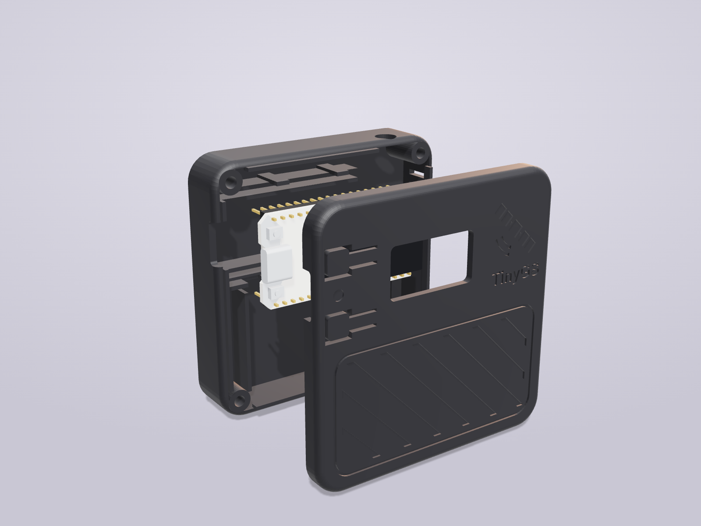
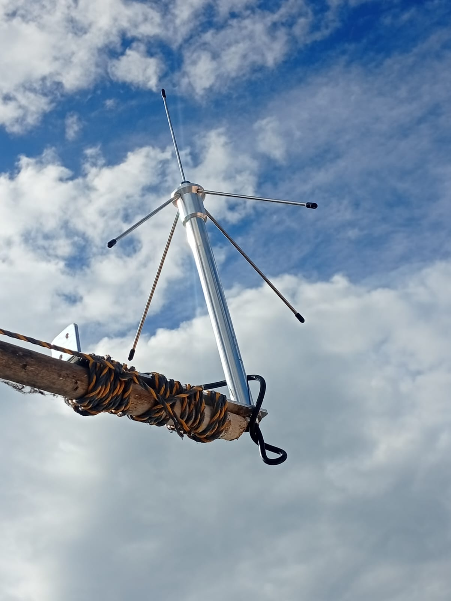

Una antena en la sabana de Cundinamarca escucha satélites en órbita baja, una placa ESP32 con radio LoRa los decodifica y la red abierta TinyGS los comparte con el mundo. Explora la estación capa por capa.
433 MHz · LoRa / FSK
paquetes confirmados
1.200
telemetría decodificada
298
km de récord
3.238,9
Datos de app.tinygs.com · 6 nov 2026
02 · Coordenadas
Un punto en la sabana
La red publica la posición con tres decimales (≈ 100 m): suficiente para calcular los pases de cada satélite sin exponer la casa exacta.
Latitud
5.067° N
5° 04′ 01″ N
Longitud
73.880° W
73° 52′ 48″ W · −73.880
Elevación
2579 m
s. n. m. (TinyGS)
Antena al suelo
—
QTH
FJ35bb
Cuadrícula Maidenhead
Lugar
Nemocón, Cundinamarca
UTC−5
03 · Arquitectura
El camino de un paquete
Sale de un satélite a 500–600 km de altura, llega por radio a la antena, la placa lo demodula y lo envía por internet a la red TinyGS.
RF
Satélite
Tianqi, SD-1, SNUGLITE, Polytech… en LoRa y FSK, 400–437 MHz.
3 dBi
Antena ground-plane
HYS 433 MHz omnidireccional: varilla de ¼ de onda y 4 radiales.
50 Ω
Cable
RG58 de 3 m + pigtail u.FL → SMA fijado en la carcasa.
SX1262
Radio LoRa
Escucha el satélite que indica el servidor; mide RSSI, SNR y Doppler.
ESP32-S3
Heltec LoRa32 V3
Firmware TinyGS, OLED, panel web local y WiFi 2,4 GHz.
MQTT
Red TinyGS
mqtt.tinygs.com:8883 (TLS): confirma y publica cada paquete.
04 · Cómo se montó
Cinco capas, una semana
Paso 1 · Componentes
La lista de materiales
Placa HiLetgo LoRa32 V3 (ESP32-S3 + SX1262, 433–510 MHz), antena HYS 433 MHz de 3 dBi con 3 m de RG58 y un pigtail u.FL → SMA. Se eligió el SX1262 porque su oscilador compensado deriva menos y recibe mejor los satélites FSK.
ESP32-S3SX1262433 MHzRG58 3 mu.FL→SMA3 dBi
Paso 2 · Firmware y red
Configuración de la estación
Firmware de TinyGS cargado desde el navegador, configuración por el punto de acceso de la placa (192.168.4.1): WiFi, posición, zona horaria y credenciales MQTT del bot de Telegram. La transmisión (TX) quedó desactivada: la estación solo escucha.
00:08:34 Connected to MQTT!
00:58:17 [SX1262] RSSI: -117 dBm SNR: -10 dB
00:58:17 Packet (100 bytes): EB FC 40 10 9A B7 F9…
→ Tianqi · reloj del satélite 2026-10-30 00:58:17
Paso 3 · Diseño
Carcasa en SolidWorks
Modelada alrededor del modelo 3D oficial de la Heltec V3 con sus regletas de pines, verificada sin interferencias y generada desde un script paramétrico.

Paso 4 · Antena
La antena, al aire libre

Foto de la estación en app.tinygs.com
Paso 5 · Resultados
El primer satélite
Los primeros paquetes válidos llegaron de Tianqi, cada 15 s. En los bytes 4 a 7 apareció el reloj del satélite (segundos desde el 1-ene-2018 UTC), que coincide al segundo con la hora de recepción.
1.200paquetes
298telemetría
18FSK
3.238,9km récord
1 / 5
05 · Mapa
Nemocón y su alcance
Toca los marcadores para ver las fotos. El círculo es el récord: un satélite recibido a 3.238,9 km.
06 · En vivo
Síguela en vivo
Estado, satélite que está escuchando, paquetes y mapa en tiempo real en la consola pública de TinyGS.